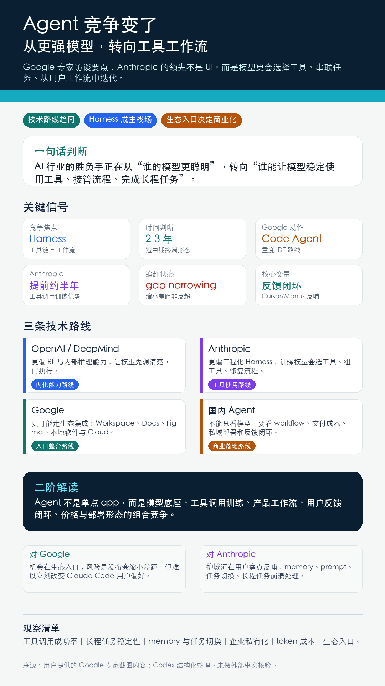

一句话判断
这位 Google 专家的核心判断是：AI 行业在底层模型架构上重新趋同，真正的竞争焦点正在从“谁的模型更聪明”转向“谁能让模型稳定使用工具、串联工作流、完成长程任务”。
核心内容
- 技术路线重新趋同。 Google、OpenAI、Anthropic 都围绕 Transformer、工具调用和 Agent Harness 强化，模型架构差异小于外界想象。
- Harness 成为短中期竞争中心。 未来两三年，竞争重点是工具链长度、任务覆盖、自我修复和长程任务稳定性。
- Anthropic 的优势来自训练目标。 Claude Code 的优势不只是 UI 或框架，而是模型更会选择工具、规划步骤、判断调用时机。
- Google 的机会在生态入口。 如果 Agent 能接入 Google Docs、Figma、本地软件、Workspace 与 Cloud，它的战场会比编码更宽。
- 追赶不等于反超。 专家认为 Google 发布新 Code Agent 更像 gap narrowing；若没有价格、私有化或性能优势，用户仍可能偏好 Claude Code。
- 工具调用是 post-training 的高级对齐问题。 它不是写好固定 skills，而是在新任务中识别相似模板、迁移经验并避免过拟合。
二阶解读
这份内容最值得记录的不是“谁赢谁输”，而是它给出一个判断 AI Agent 公司的框架：模型底座、工具调用训练、产品工作流、用户反馈闭环、价格与部署形态。五个因素缺一不可。
如果只看 benchmark，容易低估 Anthropic；如果只看发布会，容易高估 Google 的短期追赶；如果只看编码产品，容易忽视 Agent 更大的战场是办公、设计、企业流程和本地软件操作。
对 LFF 的启发
- 看 OpenAI、Google、Anthropic，不要只看模型名和参数，要看工具调用、长程任务、memory、私有化部署和价格。
- 关注 Google 是否能把 Agent 接入 Workspace、Chrome、Cloud、Android，本质是生态入口变现问题。
- 关注 Anthropic 是否持续把 Cursor、Manus 等高频用户反馈转化为模型训练优势。
- 看国内 Agent 公司，不要只问用了哪个模型，要问有没有真实 workflow、用户反馈闭环和低成本交付能力。